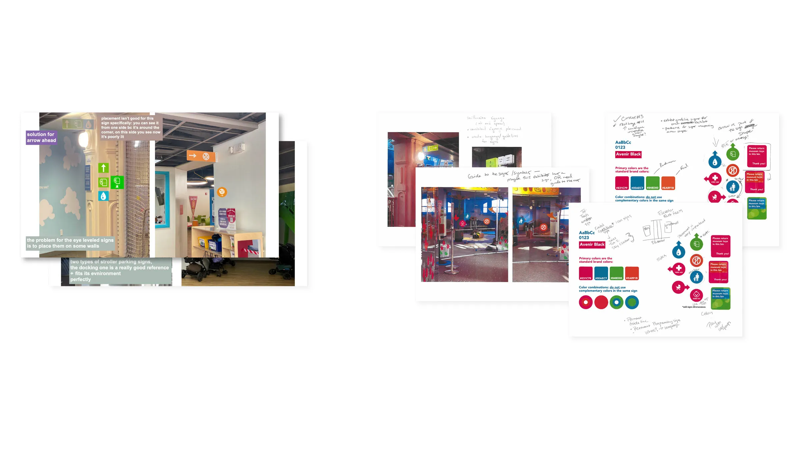
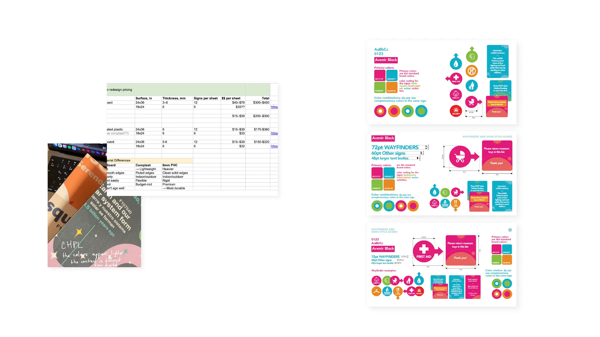
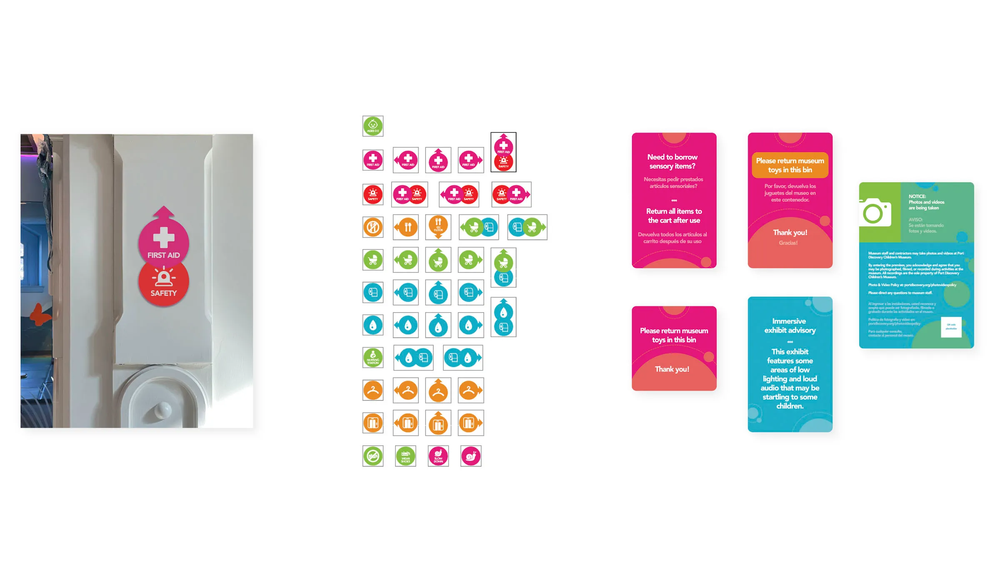

Nastia Honcharenko
Graphic Designer
Signs & Exhibitions, Branding Identity
Baltimore MD, 2026
Graphic Design Internship, Port Discovery Children’s Museum
This is my main project, which I completed during my internship at the Port Discovery Children’s Museum. During this internship, I primarily focused on signage and wayfinding.
I delivered was a unified signage system that included around 40 updated wayfinders, 12 new text signs, a style guide, and a detailed manual on how to use them in the museum space.

After thoroughly studying the existing signs, I noticed that one of the major problems was that wayfinding was placed way too high and was poorly lit. It was located out of sight for visitors, especially the main audience – children.
Step 1: Pitching ideas
Presenting ideas and design drafts to coworkers across different departments.
Step 2: Recieving feedback
Brainstorming, collecting opinions, surveying staff that works in the museum every day.

Step 3: Researching materials and production cost
Doing a cost spreadsheet for materials.
Step 4: Style guide iterations
Designing 3 versions of a detailed style guide and how-to for new signage.

Step 5: Redesigning all signs and wayfinders
Mockups for every type of placement and complete set of wayfinding signage.
